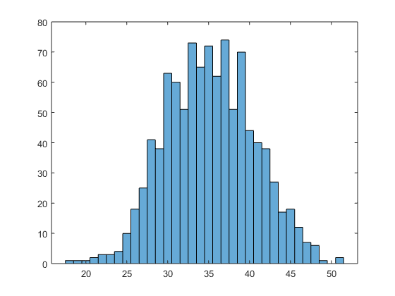
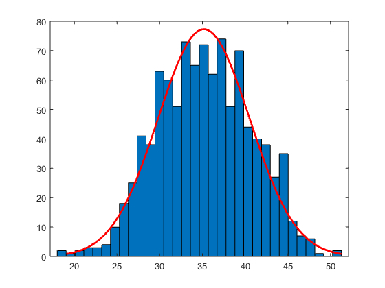
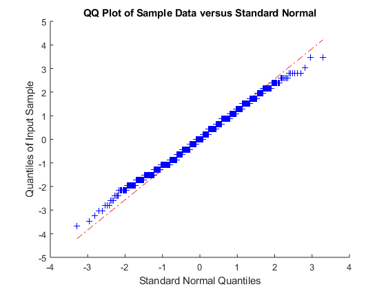

<h1>Odpowiedzi do laboratorium #2</h1> <br>


<h3> Odpowiedź I.2</h3> histogram dla X <br>

<br>

<h3> Odpowiedź J.2</h3> porównanie X z rozkładem standardowym<br>

<br>

<h3> Odpowiedź J.4</h3> Wykres typu kwartyle-kwartyle <br>

<br>
